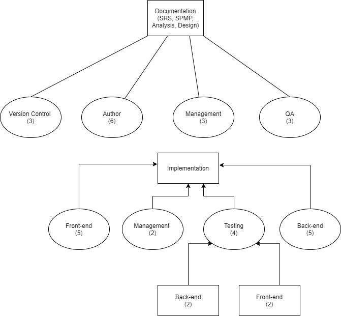

The purpose of this document is to serve as a guide for development of the project and to ensure that all requirements are met and the product functions according to the requirements outlined in the specifications document.
The SPMP will detail the major activities, resources, schedules, and milestones for developing Study Space. This will be accomplished with comprehensive descriptions and supplemental information for each aspect of the development process, being as thorough as possible.
1. Overview
StudySpace is a web application that provides university students with access to virtual study spaces and several other useful tools to help them succeed in school.
1.1. Project summary
1.1.1. Purpose, scope, and objectives
The StudySpace app is a multi-purpose web application that provides students with the following functions:
- Provide tools for similarly-minded students to connect and study together, thereby achieving a sense of unity.
- Create a space wherein students may buy or sell textbooks via an integrated 3rd party service.
- Create a space wherein students may chat on academic or non-academic topics, in private or public chat rooms.
- Provide access to knowledgeable tutors.
The purpose of this document is to provide the developers of the StudySpace app easy access to the project's deliverables, scope, purpose, plans, processes, and the team's organizational structure.
The objectives of the project are as described:
- Deploy a web application that provides the functions described above and those further expanded upon in the SRS document.
- Complete the project deliverables (documentation, implementation, testing) by the deadlines specified in StudySpace app's Project Deliverables.
- Host all documentation onto the StudySpace app's documentation website.
- Fulfil all requirements stated in the Software Requirements Specifications Document.
Activities that fulfil the requirements are within the scope of this project.
1.1.2. Intended audience
The team considers Mr. David Brown as the project client for the StudySpace app.
The team considers university students (as defined in the StudySpace Software Requirements Specifications document) as the target audience for the StudySpace app.
Possible indirect audiences may include:
- Universities that implement the StudySpace app as a supplementary learning tool.
- Students employed by StudySpace to become tutors to other students.
- University professors who may wish to participate in student discussions.
1.1.3. Constraints
The team is subjected to the following constraints.
- Schedule.
- The deadlines are imposed by its primary audience.
- There are set deadlines for each workflow, and the entire project must be done in less than four months.
- Budget and resources.
- The developers of the StudySpace app are limited by course resources to free software.
- Inexperience.
- Members of the team may have limited experience and knowledge of the methodologies, tools, techniques, and languages to be used in the completion of the StudySpace app.
1.1.4. Assumptions
The team has the following assumptions with respect to the completion of the StudySpace app.
- Documentation.
Each documentation phase (SRS, SPMP, Requirements, Design, Analysis) will occur as described.
- Part 1:
- Management must establish deadlines, break down the product deliverable into tasks, and will publish the tasks onto Github's project tracking sheet.
- Part 2:
- Management must communicate with authors regarding the document expectations, deadlines, and any further relevant information such as template, formatting.
- Authors must communicate with management regarding any potential difficulties or problems that could surface when making the Initial Draft.
- Part 3:
- Authors will create the initial draft.
- Part 4:
- Authors will hand the initial draft to the software quality assurance team (SQA) for potential revisions and suggestions to be implemented.
- Part 5:
- SQA will conduct quality testing. For further information on the SQA team’s tasks during the documentation process, refer to section 4.2 for the team’s internal structure.
- Part 6:
- Authors will make the appropriate changes to the document.
- Part 7:
- Management will inspect any potential room for revisions and final product.
- Management will hand off the product to the Version Control team who will convert the document into HTML and host onto the website.
- Availability.
- All group members are assumed to be available on class lecture times (Mondays and Wednesdays, 4:30 to 5:30 pm) for potential impromptu meetings and on Saturdays, 4 to 5 pm, for weekly meetings.
- All group members are assumed to be available to help out with most workflows.
- It is assumed that all group members can be reached via Discord on a regular basis.
- It is assumed that all group members can obtain the necessary software and equipment needed to complete their assigned tasks.
- Skills.
- It is assumed that not all group members have the same set of skills or abilities. However, it is assumed that regardless of level of expertise, all members are ready to learn and will contribute to the best of their ability.
1.1.5. Dependencies
The dependencies are:
- In order to begin the next workflow, at minimum, the first version of the previous workflow must be completed with high quality and detail.
- In order for the SQA team to perform quality assurance, the first draft/version of the document or code in question must already be complete.
- Before submitting a finalized version of a document or code, all concerns, suggestions, and mistakes pointed out by the SQA, Version Control, and Management must be addressed.
- If any changes are made to the project plan or certain specifications are not implemented, the appropriate updates must be made to existing documentation to ensure they align with the outcome of the project.
1.1.6. Project deliverables
| Deliverables
|
Date
|
| SPMP
|
February 5, 2021
|
| Software requirements specifications (SRS)
|
February 12, 2021
|
| Analysis
|
March 5, 2021
|
| Design
|
March 26, 2021
|
| Implementation
|
April 21, 2021
|
1.1.7. Evolution of the Software Project Management Plan
| Goal
|
Deadline
|
| Initial draft
|
January 29, 2021
|
| Initial draft (SQA)
|
January 31, 2021
|
| Final draft
|
February 2, 2021
|
| Additional edits [1]
|
April 5, 2021
|
Notes:
- This SPMP may be viewed in HTML or PDF format.
- Subsequence changes to the SPMP are controlled and monitored via git and Github as the primary version control tracking system used to develop the StudySpace app.
- [1] It is expected that updates may be made to the SPMP when various features, goals, or any other system changes occur.
2. Reference materials
3. Definitions and Acronyms
- API
Application Programming Interface.
- APP
App refers to the product created by the team, the StudySpace app.
- CONSISTENT DESIGN
Consistent design covers: color scheme, font sizes, font choices, and any other potential visual components.
- PROJECT CLIENT
This product was made for the use of Mr. David Brown, who is the initial User that is not part of the team to use and test this application.
- SECONDARY AUDIENCE
Secondary audiences consist of StudySpace app Users that are not 1) the project client and 2) the target audience. Examples of those who may be part of the Secondary Audience include: tutors, university professors, and the university board of directors.
- SRS
A document that states the project's Software Requirements Specifications.
- STUDENT
A student is a user enrolled in any Canadian university.
- STUDY SPACE
StudySpace refers to the web application created by the team for the project client, Mr. David Brown.
- TARGET AUDIENCE
This product was created to solve areas most commonly experienced by university students.
- TEAM
Team refers to students in CP317's Team 2 for the Winter semester in 2021.
- TUTOR
A tutor can be a student, professor, or a 3rd party that offers teaching services to any student(s).
- UI
User interface. The StudySense app UI consists of various views such as the Profile View, the Search Bar View, the Create New Post View, the Live Discussion View, the Chat Box View, the Group Chat View.
- USER
A user is someone who uses the application; likely a student. There are many possible Users. For example, there may be university professors wishing to participate in live student discussions by creating an account and are therefore Users of the app.
4. Project organizations
4.1. External interfaces
The acquiring organization of the project and the documentation(s) accompanying the project is Wilfrid Laurier University.
This project was produced to fulfil CP317 course requirements.
Entities that interact with the product will include students from the team but may include various students from other universities and indirect audiences.
4.2. Internal structure
4.2.1. Internal structure for the Specifications and SPMP phases
The team did not follow the structure (shown in the table documented below) for the first two phases (Software Requirements Specifications and Software Project Management Plan), so the group structure differs in terms of detail and the presence of a management team.
| Deliverable
|
Initial Authors
|
Review (SQA)
|
| Specifications
|
Arvin, Brian, David, Mackenzie, Matthew, Muhammad Hashir, Shyam, Zeeshan, Janelle
|
Rohan, Dayton, Ann
|
| SPMP
|
Arshdeep, Ann, Janelle, Jordan
|
Shyam, Matthew, Evan, Zeeshan, David
|
4.2.2. Internal structure for future phases (Requirements, Analysis, Design, Implementation)
In future phases, the team structure will differ to provide further organization and structure.
Documentation
- Authors
- Formulates the initial draft of the document.
- Ensures the document follows the project client's expectations in terms of template layout, formatting, and content.
- Submits initial drafts early so that the SQA team may work on the draft with sufficient time for revisions and quality control.
- Management
- Establishes, manages, and updates team deadlines.
- Heads meetings by creating the agenda, following up on issues, delegating tasks to specific teams.
- Communicates to various team representatives to ensure that overall progress on the deliverable is made.
- Manages project progress via git and Github.
- Approves or suggests final revisions for the document.
- May act as a potential back-up for other teams to complete tasks if a member has not completed their tasks.
- Provides any final suggestions, corrections, and additions for all deliverables.
- Provides frequent communication with other teams to ensure each team is aware of their own responsibilities, tasks, and deadlines.
- Ensures that project deliverables are submitted to the project client.
- Software Quality assurance (SQA)
- Ensures that project client expectations are met and product quality is maintained by checking layout, formatting, and content guidelines set by the project client.
- Tracks SQA revision history to be used in the SQA document.
- Ensures that any succeeding documentation is consistent with previous documentations, with particular attention to the requirements specifications.
- Revises any inconsistencies observed from the current documentation phase to previous phases.
- Designs potential test cases for the current documentation phase.
An example scenario for the Requirements phase: the SQA team will determine a list of necessary actors to the StudySpace app and will make revisions to the initial draft if an actor deemed necessary to the app is not found within the initial draft.
- Creates test cases without consulting the current phase's authors.
- Validates results of designed test cases and suggests improvements based on results.
- Version control
- Ensures that the final product is converted to HTML.
- Ensures that all project documentation is neatly formatted, organized, and is made accessible to the project client.
Implementation
- Front-end team
- Collaboration
- Informs the back-end implementation team of the following:
- The various structures required for the front-end implementation of the StudySpace app.
- The attributes (fields) in each structure.
- The data type in which each attribute must be defined.
- The operations to perform for each field and structure as a whole.
- Code
- Implements the UI for the StudySpace app that fulfils all requirements and specifications as documented in the SRS, with particular attention to the external interfaces and layouts described in the document.
- Designs the application in a way that allows all audiences to clearly determine the StudySense app's various functions, tools, services, and purpose.
- Implements the application to be mobile-responsive and optimized for smart-phones.
- Ensures that design choices are consistent throughout the whole application such that the StudySpace app looks unified as a product.
- Documentation
- Any decisions or agreements made between the front-end and back-end team must be summarized and documented by any member of either team for future use and ease of accessibility.
- Testing
- Performs unit testing.
- Performs integration testing to ensure that all software modules are integrated and tested to perform as a group as opposed to a single object, class, or function.
- Performs UI testing.
- Performs tests to determine that the product's user interfaces meet the requirements specifications.
- Back-end team
- Collaboration
- Informs the front-end team of any configuration procedures required to successfully access the database.
- Informs the front-end team of any format requirements required to successfully query the database.
- Code
- Ensures that any user input is stored in the app's database.
- Ensures that no unauthorized user may access the database and its contents.
- Ensures that no user information is lost.
- Designs database schema(s) in a way that fulfils and satisfies all data and formatting requirements set by the front-end team.
- Documentation
- Creates a properly documented API (see: Examples of properly documented API, Reference Materials) if a RESTful API is to be implemented.
- Any decisions or agreements made between the front-end and back-end team must be summarized and documented by any member of either team for future use and ease of accessibility.
- Testing
- Performs unit testing.
- Performs integration testing to ensure that all software modules are integrated and tested to perform as a group as opposed to a single object, class, or function.
- Performs schema testing.
- Performs stored procedures and views testing.
- Performs trigger testing.
- Performs tables and columns testing.
- Performs database server checks.
(For further information on the types of database testing, see: Database Testing - Types, Reference Materials, Reference Materials.)
- Software Quality assurance (SQA)
- Quality check
- Ensures that code is properly commented.
- Ensures that any written API is properly documented.
- Ensures that variable names are meaningful.
- Testing
- Performs conformance testing, ensuring that the product conforms to the requirements specifications on which it is based.
- Performs fuzz testing, providing invalid, unexpected, or random inputs to the front-end and back-end applications.
- Performs interface testing, evaluating whether systems or components pass data and control correctly to one another.
- Performs structural testing, considering the internal structure of a system or component and ensuring that each program statement performs its intended function.
- Performs workflow testing, duplicating specific workflows which are expected to be utilized by the end-user.
- Performs API testing, checking the functionality, reliability, and performance of the API.
- Performs requirements testing, validating that the requirements are correct, complete, unambiguous, and logically consistent and allows designing a necessary and sufficient set of test cases from those requirements.
- Management
- Management in the implementation phase will have the same responsibilities as in the documentation phases.
The image below should provide further clarification on the internal structure for future documentation phases and the implementation phase. The numbers in brackets indicate the approximate number of people per team.

5. Managerial process plans
5.1. Management Objectives and Priorities
The objective of this project is to produce a web application that provides post-secondary students with several tools, including virtual groups for studying and networking with new peers. The main target audience for this product is post-secondary students. However, secondary target audiences include tutors, alumni, and anyone looking to buy or sell textbooks. The main objective is to complete all workflows of the project by their respective deadlines, as determined by the professor. The main priorities are quality of work and time efficiency. Budget is not a priority because there is no intention for any amount of money to be spent on this project.
5.2. Work plan
5.2.1. Work activities and schedule allocation
| Phase
|
Starting
|
Deadline for first draft to be submitted to SQA
|
Deadline for SQA to finish Assessment
|
Deadline for final revision
|
Convert documentation to HTML by
|
Deadline to submit final product
|
| Specifications
|
Jan. 18
|
Jan. 23
|
Jan. 25
|
Jan. 28
|
Jan. 29
|
Jan. 29
|
| SPMP
|
Jan. 26
|
Jan. 30
|
Feb. 2
|
Feb. 4
|
Feb. 4
|
Feb. 5
|
| Requirements
|
Feb. 5
|
Feb. 9
|
Feb. 10
|
Feb. 11
|
Feb. 11
|
Feb. 12
|
| Analysis
|
Feb. 12
|
Feb. 26
|
Mar. 1
|
Mar. 3
|
Mar. 4
|
Mar. 5
|
| Design
|
Mar. 5
|
Mar. 10
|
Mar. 14
|
Mar. 25
|
Mar. 26
|
Mar. 26
|
| Implementation
|
Mar. 15
|
Mar. 28
|
Apr. 4
|
Apr.11
|
Apr.12
|
Apr. 12
|
Each work activity has been scheduled in such a way that maximizes opportunities for different tasks to be done concurrently. Since each successive phase depends on having an established, agreed upon plan provided by the previous phases, it must be ensured that the next phase is never started before the deadline for SQA of the previous phase.
The resources used to complete the various work activities mentioned here include Google docs and GitHub. Google docs is used for writing the various drafts of each document and for the SQA team to make suggestions via the comment feature. GitHub is used to organize the documents and for general coordination of group processes.
5.3. Control plan
5.3.1. Schedule control plan
Mechanisms used to measure progress and compare actual progress against planned progress include:
- Weekly group meetings on Discord held every Saturday. These weekly meetings are intended to allow for regular check-ins and to ensure that all task forces are working on schedule.
- Meetings amongst group members who are working together on a given workflow; scheduled as necessary by the respective management team.
- For each workflow, there are 3 group members who are assigned the management role. The managers take ownership of the workflow and are responsible for establishing deadlines, heading meetings, reviewing the final documentation, and monitoring the progress of the workflow. The managers of a workflow must communicate to the rest of the group when issues with scheduling or completion arise.
When actual progress doesn’t meet planned progress, corrective actions include:
- Making adjustments to scheduling to better suit the needs of the group members who require more time.
- Assigning additional group members to the task that is demanding more time.
- The management team responsible for the work devises an appropriate course of action that ensures everything gets done.
5.3.2. Quality control plan
Mechanisms used to control quality of work include:
- An SQA team assigned to each individual phase of the project to ensure all work done by the authors is correct, detailed, and conforms to the plans established in the previous phases. If there has been an update to the project scope or plan, it is the responsibility of the SQA team to ensure that the version control teams of previous phases are notified in the event that their phase requires modifications due to this update.
- Each workflow has a version control team (3 people) responsible for updating the documentation of their assigned workflow whenever changes are made in successive phases that do not conform to the plans as laid out in their documentation.
- The management team is responsible for reviewing the editing process done in response to suggestions made by the SQA team. Managers must ensure that all quality assurance suggestions/concerns are properly addressed.
- All contributors to a phase — whether an author, SQA, or manager — must review the documentation from all previous phases prior to starting to work on their assigned phase. This is to ensure that all members are aware of plans, goals, and vision for their phase, which have been laid out by the past phases of the project.
5.4. Risk management plan
5.4.1. Risk map
| Likelihood/Impact
|
Catastrophic
|
Critical
|
Significant
|
Marginal
|
| Very Likely
|
none
|
R1
|
R2
|
none
|
| Likely
|
none
|
none
|
R3
|
none
|
| Unlikely
|
none
|
none
|
none
|
none
|
| Very Unlikely
|
none
|
none
|
none
|
none
|
5.4.2. Risk details
R1: Could run out of time since we have a very tight schedule.
Mitigation strategy.
- Start with a schedule that all group members can agree is reasonable.
- Aim to get each phase done at least a day before its due date so there is a time buffer if needed.
- For the implementation phase especially, plan for things to go wrong; allocate extra time.
- The management team for each phase is responsible for establishing deadlines, tracking progress, and ensuring work is completed on time.
R2: There will be many technical difficulties throughout the implementation phase because most group members are inexperienced with working on projects of this size.
Mitigation strategy.
- Schedule enough time for more knowledgeable group members to guide others at first; anticipate a slow start as everyone learns.
- Assign many group members to the SQA team and start SQA early on so that most bugs are identified while enough time is remaining for the programmers to actually fix them.
- Make sure no programmer is given a workload that is too much for them to handle.
- Group members who will be involved in the programming of the implementation phase should become familiar with the frameworks we plan to use ahead of time.
R3: We might be underestimating the time, effort, and skills required to implement our project.
Mitigation strategy.
- Compare our project with what has been accomplished in sample projects from previous years. If ours is a lot more complicated, consider which features are unnecessary and what can be removed.
- Remember that the planning documents are all living documents -if, after writing them, we decide we won’t implement something we said we would, we can retroactively update previous documents. It is the job of the representatives of previous project phases to ensure the older documents are up to date with the current plan.
6. Technical Process Plans
6.1 Process Model
Development of the application is broken down into several documentation and implementation phases. Each phase is assigned a team of developers holding various roles that each focus on a specific work activity. Using the following organization, every aspect of development is streamlined and done effectively.
Documentation
- Authors
- Writers of the initial draft; ensure content, format, and layout all follow standards and protocols.
- SQA Team
- Review team that looks over initial draft, ensuring quality of work and standards are met according to the client’s expectations.
- Management
- Establishes, updates, and maintains project deadlines. Keeps the team on track and solves any potential issues that may arise.
- Version Control
- Converts the final draft to proper HTML format, ensuring documentation is accessible and readable for the client. Also responsible for updating the document any time plans change.
Implementation
- Front End Team
- Implements the front end of the application, including UI/UX design. Tests code and ensures basic functionality before handing it over to the SQA team.
- Back End Team
- Implements the back end of the application, including any database applications. Ensures code is free of glaring errors before it is handed to the testing team.
- Management
- Has the same responsibilities as a documentation management team.
- SQA Team
- Ensures all code follows the predetermined standards and protocols layed out in documentation. Tests the application rigorously.
The entire team will discuss the model and features we hope to implement and then assign each task to the appropriate team. Once major milestones are met, each teams’ work will be combined and a review team will ensure everything is working seamlessly.
6.2 Methods, Tools, and Techniques
The developers will use Discord and Github to stay organized and coordinated. Developers will use VSCode along with any required plugins to write the code itself and use git commands to push any changes to the main project. All developers will agree to write code in a consistent style regarding things like brackets, comments, and indentation. A set standard will be agreed upon and all written code will be reviewed to ensure the standards are met. The appropriate database management software will be used to store and manage the user data and a schema of the database will be generated in said software.
7. Supporting process plans
7.1. Verification and Validation Plan
7.1.1 Verification Plan
The verification plan is to identify and ensure that features/activities establish abidance of the requirements. Each features’ code will be tested by their original developers followed by another member of the development team and a final review given by a member of the software quality assurance team. Github will be used in order to track each document's revision history.
7.1.2 Validation Plan
The validation plan ensures that the application will meet customers’ expectations. Following the verification plan the same process will be met in validating that each activity on the front end of the application is working to the customers’ satisfaction.
7.2. Documentation Plan
Deadlines for each deliverable can be seen in the table displayed in section 5.2.1
Each deliverable will be met by the following teams:
Authors:
- Formulate initial rough drafts on time in order to give the Quality Assurance team time to review
- Edit documents based on Quality Assurance reviews
Quality Assurance Team:
- Review each version of the documents and leave comments for authors based on what can be improved
- Edit grammar, punctuation, and spelling
Management Team:
- Establish deadlines
- Create agenda for weekly meetings
- Keep track of document progression
- Communicate with all other teams to ensure each member is on the same page
- Keep track of revision made for SQA document
Version Control Team:
- Ensures documents follow proper formatting
- Coverts documents to HTML
- Hosting documentation
7.3. Quality Assurance Plan
The Quality Assurance plan is managed by the quality assurance team of any given deliverable. This ensures that the final product of each deliverable complies to the satisfaction of the intended audience.
7.4. Problem Resolution Plan
The Problem Resolution plan is managed by the management team of any given deliverable. This plan ensures that corrective actions will be taken when a problem occurs.
Corrective actions include:
- Timetable adjustments that benefit group members requiring additional time.
- Assigning the appropriate amount of group members to each task depending on the demands of said tasks.
- Communication with each team to confirm each task is completed according to the schedule
These actions will be communicated via the team Discord server in which there are channels dedicated to each deliverable.